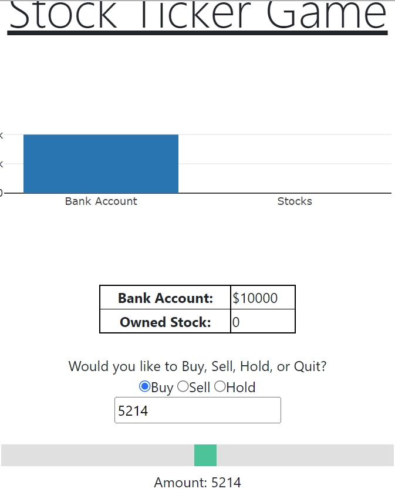

I am just heading into my last semester in my Computer Science degree at Weber State University. I spent some time working as a software developer for Cubiscan and recently made a career change. I work for Pluralsight as a Technical Skills Consultant and develop projects on the side as a hobby. This is a portfolio of the work that my team and I completed this semester in our CS3750 Course.
The Hangman Game was written primarily in PHP and required functionality such as register, login, logout, playing the game, and viewing high scores. This functionality was achieved by using SQL and storing the user's data such that none of their private information could be viewed or stolen. We hashed the passwords using SHA-256 and a salt.
$saltedPassword = $password . $salt;
$hashedPassword = hash('sha256',$saltedPassword);
$sql = "INSERT INTO users (username, hashed_password, salt) VALUES ('$username', '$hashedPassword', '$salt')";
Session variables were key in succeeding in this project. Specifically in the logout portion. Having to unset, and destroy the variables so that the site does not remember the user when they open the page back up was critical. Additionaly, learning to work with a SQL database in PHP was a learning experience for myself. I didn't have much PHP experience (at least that was recent) going into this project. Brushing up on skills that are simple to me in other languages proved to be a challenge here.
The banking application was one that was more what I am accustomed to. Similar to hangman, this application needed to allow the user to register, login, logout, and access different portions of the application - similar to what you would do in your modern banking applications nowadays. We accomplished this by using ASP.net and hosting a MSSQL database online. Thankfully ASP.net handles much of the password hashing when creating scaffolded pages. One of the challenges that we had to overcome as a team was understanding the use of models and how they are used to access data from the databse and push data to it.
public class Transaction
{
[Key]
public int TransactionID { get; set; }
[Required]
[Display(Name = "Transaction Type")]
public string TransactionType { get; set; }
[Required]
public string UserID { get; set; }
public string Account { get; set; }
public DateTime TransactionDate { get; set; }
[RegularExpression(@"^\d+(\.\d{1,2})?$", ErrorMessage = "Can't have more than 2 decimal places")]
[Precision(18,2)]
public decimal TransactionAmount { get; set; }
}
Along with models, having to work with database migrations and handling database functions through this method compared to a GUI or other typical procedures was a learning curve for our team. I have experience working with these concepts and ideas which put a lot of that workload on me to accomplish or assist team members in questions that they had learning processes that were unfamiliar to them. Much of the backend for these functions were set up by myself such as the generic repository pattern and the unit of work.
private IGenericRepository _ApplicationUser;
private IGenericRepository _Transaction;
public IGenericRepository ApplicationUser
{
get
{
if (_ApplicationUser == null)
{
_ApplicationUser = new GenericRepository(_dbContext);
}
return _ApplicationUser;
}
}
public IGenericRepository Transaction
{
get
{
if (_Transaction == null)
{
_Transaction = new GenericRepository(_dbContext);
}
return _Transaction;
}
}
public int Commit()
{
return _dbContext.SaveChanges();
}
public async Task CommitAsync()
{
return await _dbContext.SaveChangesAsync();
}
public void Dispose()
{
_dbContext.Dispose();
}
Our Stock Investing Practice proved to be the most difficult project for our team. It built on many of the concepts that we learned in the previous projects but required us to focus a bit more on UI elements that the user interacted with and having each of those components update with one another. For example, we used a slider, attempted a pie chart (resulted in a bar graph), and a text box, that would all update simultaneously to accurately depict how much the user was buying or selling.
We used Polygon.io as our API that we called as the user progressed through the game. I was primarily responsible for handling the UI portions of this project. Unfortunately, the pie chart library that we used ran into issues when trying to update other portions of the UI which lead us to use the bar graph pictured above. When the user quit the game it would display their overall earnings throughout the progress of the game to notify them whether they made or lost money in their journey.
Grid Word Finder was the most success we had as a team. It felt like this project was the one where all of the other knowledge from our previous projects came together. Similar to previous projects we had to call an API each time the user submits a word to check if it is a real word. We used SignalR in this project to allow for two users to play the game at the same time and update each player in real time when a users score increased by finding a word.
private void AddScoreAndWord(string connectionID, string word, int score)
{
if (Context.ConnectionId == connectionIDS[0])
{
user1Words.Add(word);
user1Score += score;
}
else if(Context.ConnectionId == connectionIDS[1])
{
user2Words.Add(word);
user2Score += score;
}
}
Something new with this project was that it needed to work on a mobile device which is the image shown above. Other than that, the biggest struggle we ran into as a team was a bug that reset scores after the game was complete and kept them at a zero score with no words in the words lists. Otherwise, we had a team member that handled the javascript logic to determine whether the letter selected was valid or not based on the previous selection.